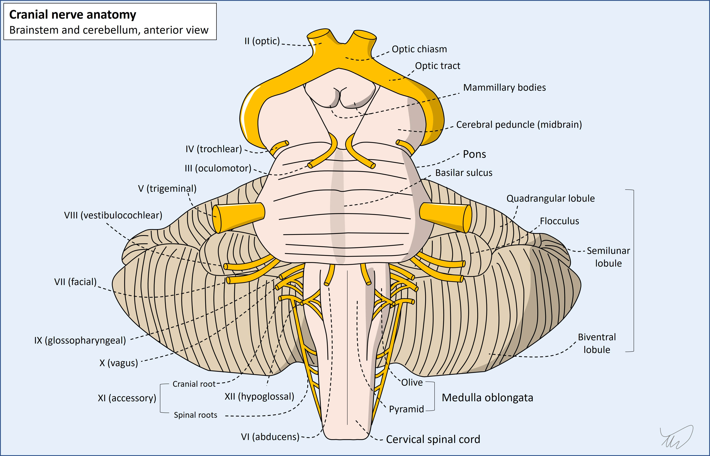
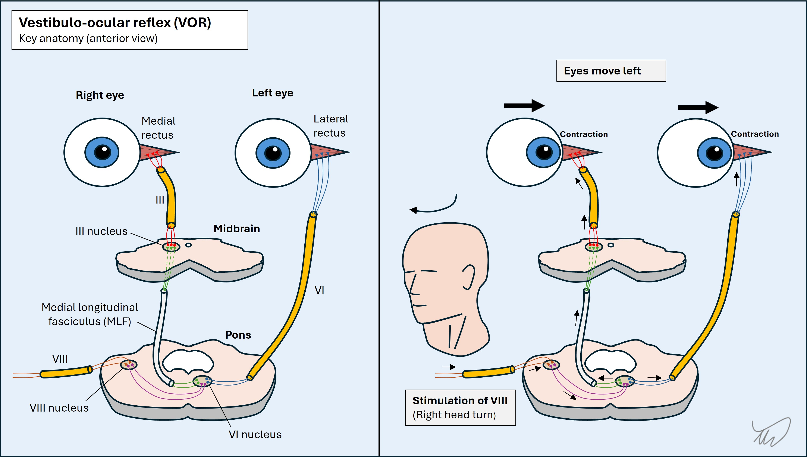
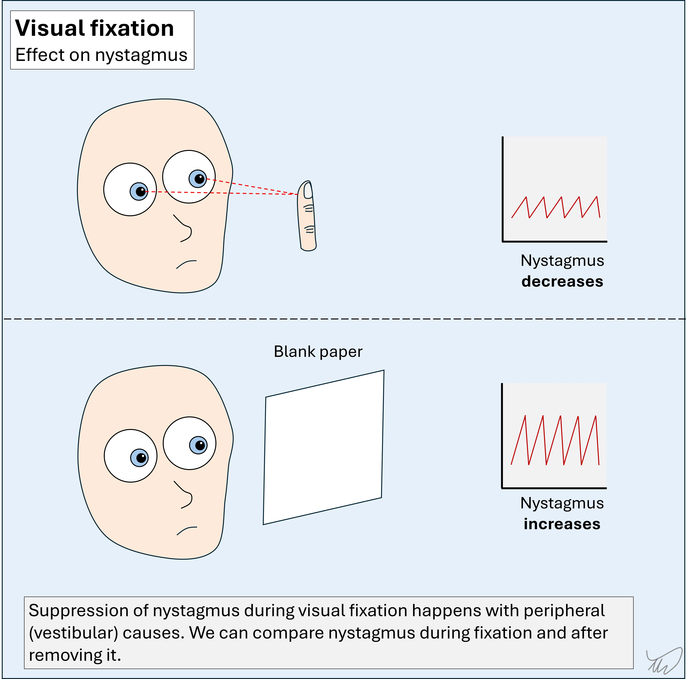
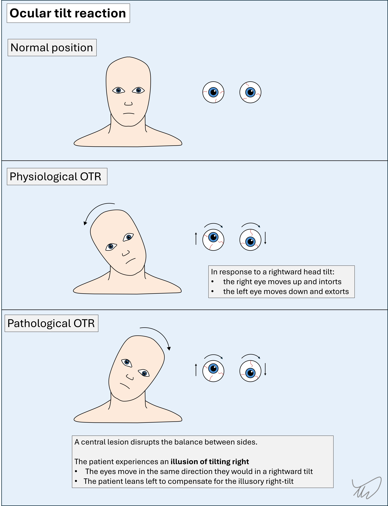
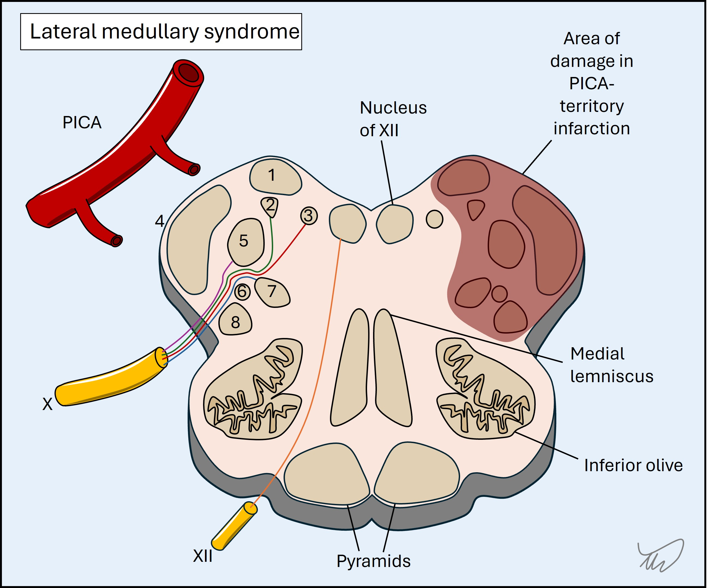

Case 5. Acute vertigo and unsteadiness
Where is the lesion?
The patient has acute vertigo – the room is violently spinning and he feels sick. This is persistent vertigo – it is present constantly at rest, worse on movement. This is distinct from paroxysmal vertigo which is absent at rest then arises on movement. This distinction is fundamental - our entire assessment depends on which of these we are dealing with.
Acute persistent vertigo is an important and dramatic presentation. Not only do people often look and feel awful with this, but it can be deadly - some people will have a serious underlying brainstem or cerebellar lesion, particularly stroke - i.e. a central cause.
However, most people will have a peripheral cause - i.e. a vestibular lesion, usually vestibular neuritis - a benign, self-limiting but temporarily debilitating condition – and a very unpleasant one.
This presentation is common – many people attend hospital with acute debilitating vertigo every year. The approach is entirely clinical – simple skills, used properly, can reliably tell us who is in danger and like has a central lesion, and who has a peripheral lesion (and can go home!).
The following do not tell us the answer:
The ‘standard neurological examination’ sequence – i.e. the general approach we learn in university – also does not always differentiate central and peripheral causes here. It easily does if someone has blatant cranial nerve, cerebellar or other long-tract signs, but these are not always present – and often are not. We’ll need to use some special techniques.
The eyes are the key - they tell us what we need to know to reliably differentiate central and peripheral causes of acute vertigo. There are numerous tests we can use, and algorithms that combine them into a sequence.
Before we look at these, we need to understand of the key anatomy and physiology.
The vestibular system is centred in the ears but feeds into the brainstem and cerebellum, as well as projecting to the spine, brain and eyes. It allows us to balance, move, know where we are in 3D space, and keep our eyes on a fixed target as we move around. When it fails, the consequences are very disabling.

To make sense of this case we will need to review the system, starting with the inner ear.
Inner earWe have bilateral vestibular input from both inner ears. The vestibular organ consists of three semicircular canals which detect angular motion (e.g. head rotation) and the otolith (utricle and saccule) which detects linear motion.
Each canal has a counterpart on the other side, angled in the same plane. Movement of the head in a direction stimulates the canal on one side and inhibits its counterpart on the opposite side.
This is achieved by fluid moving in the canal, dragging on hair cells. If they are pulled in one direction they stimulate the vestibular nerve afferent endings (i.e. depolarisation, causing firing). If pulled in the other, the nerve endings are inhibited (hyperpolarisation). If a canal in the left ear is stimulated by fluid movement (depolarisation), its counterpart in the right ear is inhibited (hyperpolarisation). This allows us to sense motion.
If we are still, the fluid is not moving in either direction, so there is symmetrical baseline tonic input from both sides – and we do not perceive any sense of motion.
If there is pathology on one side, this tonic balance is lost. One side becomes more active relative to the other, and the consequence is the illusion of movement - vertigo.
There are two ways in which this balance can be disrupted:
Whichever side is more active, the result is as if there had been movement towards it. In the first example, the result is as if there had been movement in the direction of side B. In the second, it is as if there had been movement in the direction of A.
Vestibulocochlear nerveEach canal has nerve fibres which join together as the vestibular nerve, and this is joined by the cochlear nerve forming the vestibulocochlear nerve (VIII).
This nerve travels inward, passing through the internal acoustic meatus into the cranial cavity. The facial nerve and labyrinthine artery also pass through the meatus, but in the opposite direction.
Cerebellopontine angle and brainstemNerve VIII enters the pontomedullary junction just posterior to VII, at the cerebellopontine angle.

VIII is a complicated nerve in terms of its central nuclei, similar to some others (V, X) – and unlike others which are much simpler, with a single nucleus (e.g. VI, VII, XII). In total there are 4 vestibular and 2 cochlear nuclei.
Vestibular nucleiThe 4 vestibular nuclei – superior, inferior, medial and lateral - are spread between the pons and medulla, and are all in the dorsal lateral zones. They have different roles and all feed into different structures - which is beyond our learning needs for this case. In short, they project fibres to various regions, including:
We will review what happens above the nuclei shortly, but first should consider the cochlear elements.
Cochlear nucleiThe 2 cochlear nuclei - dorsal and ventral – are also in the dorsal lateral medulla and pons. These carry hearing signals, and project up through the brainstem and into the brain, terminating in the auditory cortex (temporal lobe). This is a multi-synapse pathway with tracts rising bilaterally - like a ladder.
We don’t need to know this pathway, but it is useful to understand the result of this: since hearing information from left and right ears travels bilaterally, it is unusual for central lesions to cause unilateral hearing loss, except in the entry zone in the pons, or at the nucleus. Everything above this is bilaterally represented, so has a 'backup' system. This is similar to how upper motor neuron corticobulbar tract lesions do not produce forehead weakness.
In contrast, peripheral lesions – at the cochlea or in the nerve – can certainly cause hearing loss, although some only affect the vestibular components in the ear or the nerve, and likewise, some only affect the auditory (cochlear) components. Despite being a joint nerve, it is possible for disease processes to only affect one of its functional sections. This is important - vestibular neuritis, the commonest vestibular nerve problem, does not cause hearing loss - and if hearing is affected, the patient does not have vestibular neuritis!
Vestibular projections in the brainstem and cerebellumThe vestibular fibres project through wide regions of brainstem and cerebellum, and damage to any of these can potentially produce vertigo – so vertigo is not a particularly localising feature if due to central causes. However, other features that co-occur may allow localisation – including other cranial nerve nuclei or ascending/descending tracts that run adjacent to the vestibular pathways. Important examples include:
Above all this, there is eventual vestibular input into the brain which gives higher awareness of our position in space.
We can normally keep our eyes on a chosen target as our head and body moves around, even with rapid direction shifts. This is through communication between the vestibular system and ocular muscles.
Neck rotation in a direction is accompanied by an equal and opposite rotation of both eyes. This is the vestibulo-ocular reflex (VOR).
The VOR is as follows, described for rightward head turning, with leftward eye movement resulting:

The simple summary of this is – if the right-sided system is stimulated, the eyes move left. This can be shown using calorimetric testing – which alters the tonic balance between sides. If warm water is introduced into the right ear it increases the firing rate of the right system so the eyes are pushed left (as if the head were being turned right). If cold water is introduced instead, the right system’s firing is decreased, so the eyes are pushed right (as if the head were turning left).
Similar VOR actions exist for vertical eye movements after neck flexion/extension, as well as for movements on neck lateral flexion – these include a torsional component; the eyes roll the opposite way from the head to keep vertical alignment, so the world doesn’t appear to be tilting. This is the ocular tilt reaction (see later).
The VOR is very useful - we can test it during the examination using the head impulse test (HIT) to look for vestibular pathology.
Clinical signs 1: head impulse testNormally the eyes can maintain fixation on a target despite sudden movements of the head in a given direction.
In this patient’s case, the right-sided VOR works while the left fails. He can’t keep his eyes on a target (the examiner’s nose) during rapid head rotation to the left – they disconnect, then overshoot back to regain fixation. The second part is a corrective, voluntary saccade. This is suggestive of left-sided vestibular dysfunction (i.e. vestibulopathy).
An abnormal HIT is a valuable clue to a peripheral lesion – though it can rarely be seen in central lesions, so it's not 100% specific. If it was, we could just stop here, but we need to continue the examination.
However, a normal HIT is concerning – in peripheral causes it should be abnormal. This causes confusion - a normal test is usually a reassuring finding! - and is a trap for the unwary. Unfortunately people misunderstand this, and assume the normal HIT means a peripheral (benign) lesion.
Clinical signs 2: nystagmusOur eyes can move in two ways:
Nystagmus refers to repetitive, involuntary back-and-forth movements of the eyes. It’s a sign – not a symptom; oscillopsia is the name given to the symptom of things appearing to jump. Nystagmus may cause oscillopsia, although often things simply appear blurred – as foveal fixation is constantly broken.
There are different types of nystagmus - but the the main pattern is jerk nystagmus. This usually affects both eyes simultaneously and in the exact same manner - although monocular forms do also occur.
There is a slow phase (smooth pursuit) in which the eyes drift, and a fast phase (saccade), when they jerk back to where they began. The fast phase is also called ‘beating’, and we define the nystagmus by this, for example right-beat or down-beat. Note that the ‘slow phase’ is still quite fast when we view it with the naked eye – it’s just the slower of the two!
Physiological nystagmusJerk nystagmus happens physiologically when we look at a rotating object, fixating on a spot and following it (smooth pursuit) until it rotates out of our view, then our eyes jump (saccade) to fixate on another one coming into view – we then follow that until it goes out of sight, and the process repeats. This is called optokinetic nystagmus (OKN) and we can demonstrate this using a drum. It also happens when we look out the window of a vehicle, fixing on things passing by such as trees or lamp posts, and as each passes out of view we fixate on another one.
Pathological nystagmusJerk nystagmus also happens pathologically when there is an alteration in the forces that normally hold the eyes in place. In this situation the person is not following a moving target – they just can’t keep their eyes in a position. They drift in one direction, then there is a corrective jerk to restore their initial position, and the process repeats.
The slow phase is pathological - due to a failure at the vestibular or central (brainstem or cerebellar) level, causing inability to hold the eyes in position.
The fast phase is corrective – with a signal from the brain being sent to move the eyes back to the initial position
As above, the fast phase defines the nystagmus direction, and there are three main types based on this.
Horizontal nystagmusHere, the eyes drift to one side then jerk back to where they started.
The nystagmus may beat to the right, to the left, or both. If it only beats in one direction this is unidirectional nystagmus.
If the nystagmus beats in different directions depending on gaze, this is bidirectional nystagmus - or direction-changing nystagmus. This is a form of gaze-evoked nystagmus.
Vertical nystagmus
Vertical nystagmus drifts and beats this in the vertical plane. In upbeat nystagmus the eye drifts down then beats back upward. The opposite happens in downbeat nystagmus.
Sometimes vertical nystagmus is hard to spot in the eyes - but the eyelids flicker. This is especially true during downward gaze – but if we lift the eyelids and ask the patient to lean their head backward, if becomes easier to see downbeat nystagmus.
Downbeat nystagmus is also often more obvious when looking laterally.
Torsional nystagmusTorsional nystagmus features rotation of the eyeballs.
There is a slow rotation in one direction, then a fast rotation back in the other. Unlike horizontal and vertical forms in which the iris moves, torsional nystagmus can be difficult to notice – it is best seen looking at blood vessels on the sclera. It can be tricky at times to tell apart from vertical nystagmus so we need to also watch the iris – which shouldn’t vertically shift.
Torsional nystagmus can be isolated but often co-occurs with horizontal forms.
We define the nystagmus according to the fast phase rotation of the eyeballs from our perspective – clockwise (the upper pole beats to the patient’s left ear) or anti-clockwise (upper pole to right ear).
Spontaneous, gaze-evoked and positional nystagmusWe define the nystagmus according to the fast phase rotation of the eyeballs from our perspective – clockwise (the upper pole beats to the patient’s left ear) or anti-clockwise (upper pole to right ear).
When nystagmus is only present with the head in a specific position this is positional nystagmus. This is particularly important in paroxysmal vertigo when we perform specific diagnostic manoeuvres to trigger attacks – and we can analyse the vector of the nystagmus in that position to tell us the problem (usually crystal blockage in one of the semicircular canals).
Interpreting nystagmusThe type and direction of nystagmus is a core part of how we differentiate between peripheral vestibular causes and central (cerebellum and brainstem) ones.
When we see horizontal nystagmus it is important to look at what happens to the direction of the fast phase during lateral gaze to either side.
If the direction of the fast phase doesn’t change – say it beats to the right when looking right, and also to the right when looking left – this is a reassuring sign and suggests a peripheral cause. This is called unidirectional nystagmus.
If the direction of the fast phase changes – say it beats right looking right, and left looking left – this is a central sign. Terms used include direction-changing nystagmus, horizontal gaze-evoked nystagmus, and bidirectional nystagmus.
Note- we should avoid the term bihorizontal nystagmus as this is unclear. The first example above is bihorizontal – it happens to either horizontal extreme – but it doesn’t change directions.
In the first type above, the nystagmus usually gets more pronounced when looking in the direction of the fast phase. This is called Alexander’s law. It is helpful to note this as it usually suggests a peripheral cause.
The mechanism for this is as follows – the example given is for right-beat nystagmus due to a left vestibular lesion.
Be careful not to confuse this for bidirectional nystagmus – where the fast phase beats in the direction of horizontal gaze. This is a concerning sign for central disease, unlike unidirectional nystagmus obeying Alexander’s law.
Removal of visual fixationAnother useful element is what happens when visual fixation is removed.
We are usually examining eye movements with the patient fixing on an object – e.g. the examiner’s finger. However, peripheral nystagmus can worsen when visual fixation is abolished, and lessen during fixation – this is called fixation suppression.
We can demonstrate what happens when fixation suppression is removed. The best tool is Frenzel goggles, which blur the patient’s vision. A sheet of blank paper also works, as in this case. Sophisticated vestibular labs use night-vision cameras to record nystagmus with lights off – but most of us don’t have access to this luxury!
Removing fixation tends to remove the suppression of nystagmus in peripheral causes, making it more obvious, and fixating suppresses it. In central causes, fixation tends not to suppress it. The key is looking for lack of variability – a marker of central aetiology. However, this isn’t 100% specific – central lesions can sometimes display fixation suppression - so it should be interpreted along with the rest of the assessment.
There is another useful technique here. If someone doesn’t have spontaneous nystagmus, we can abolish fixation and see whether nystagmus emerges (using paper or Frenzel goggles). If this happens it’s a clue to a peripheral cause.

Other eye signs to consider
In this case there were no other eye abnormalities such as Horner’s syndrome or a gaze palsy.
The patient’s eyes are normally aligned. Skew deviation is vertical misalignment of the eyes not due to a cranial nerve palsy (e.g. IV or III). This is sometimes obvious, but can be subtle, so it is important to test by alternately covering each eye and watching for vertical movement in the opposite, uncovered, eye.
This vertical movement is distinct from the horizontal movements seen in people with longstanding squints (strabismus) – but unfortunately people often mistake these. It’s helpful to ask someone if they have a longstanding squint – they will often tell you (‘my left eye is lazy!’).
Skew deviation is a central sign, though it doesn’t localise to a specific region. Its absence is reassuring if the rest of the exam doesn’t suggest a central cause.
An extreme version of skew deviation is the ocular tilt reaction (OTR). Here, there is vertical misalignment of the eyes, and the patient tilts their head to the side of the lower eye (figure). The physiology is a complex, but in simple terms - we normally have vertical shifting of our eyes (one up, one down, with some rotation) when we tilt our heads. In OTR there is central damage to the system involved, so the patient experiences the sense of tilting, and leans the opposite way.

Other abnormalities this patient does not have...
The rest of the examination is normal – no other cranial nerve signs, no weakness, sensory disturbance, and no cerebellar signs.
He can stand, but is unsteady. This doesn’t necessarily imply cerebellar pathology – it can be seen with acute vestibular disease too. However, if the unsteadiness is severe, this suggests a central cause. People with vestibular problems can usually walk, even it feels unpleasant. We should always test stance, gait and tandem gait.
The patient has none of the abnormalities that we might expect in certain brainstem lesions that are associated with vertigo. The best-known is lateral medullary syndrome (Wallenberg’s), in which a densely-packed area is injured leading to a cluster of signs:

He also has no hearing loss. This is often asked about, and if someone with acute vertigo has hearing loss it is often termed labyrinthitis and incorrectly thought to be reassuring, because people assume this suggests a benign, peripheral disorder. There are two reasons this is wrong.
Firstly, the labyrinthine artery is a branch of the anterior inferior cerebellar artery (AICA) (figure). Occlusion can produce hearing loss (and sometimes tinnitus) from cochlear damage as well as vertigo, with or without other signs – so ironically while this is a ‘peripheral’ cause of vertigo (the labyrinth is damaged), it is a ‘central’ aetiology. This is similar to a retinal infarction - which is not a 'brain' infarction, yet is supplied by the same circulation and has the same implications in terms of management.
Secondly, dangerous inner ear pathologies can produce vertigo as well as hearing loss. Even though these are not central causes for dizziness, they are not trivial either. Hearing loss may be a marker of these.
When we assess acute vertigo, various signs are immediate markers of a central cause, for example clear cerebellar or hemisensory disturbances – if present they immediately tell us the cause is central.
However, they are often absent. There are also no signs that in isolation ‘prove’ a peripheral lesion. We examine for combinations of features, including ‘relevant negatives’ – particularly the absence of skew deviation.
Various algorithms have been developed. The best-known is HINTS, developed for use in patients with acute vertigo and spontaneous nystagmus.
1. Head impulse test
2. Nystagmus
3. Test of Skew
Positive if either of the below:
Note - HINTS is not ‘positive’ or ‘negative’ - results are either ‘peripheral’ or ‘central’. A positive head impulse test is a peripheral sign, while a positive test of skew is a central sign.
Some studies suggest that HINTS can differentiate central and peripheral causes more accurately than MRI. Unfortunately the ‘real-world’ accuracy is lower, as people do not have the same knowledge or skill required to use it. A 2023 review of studies (Gottlieb et al, Cochrane) found high sensitivity but only reasonable specificity.
This has consequences:
It is important to understand how to report results. HINTS is not ‘positive’ or ‘negative’ – results are either ‘peripheral’ or ‘central’. Various patterns can arise depending on the combination of features. There are two many permutations to list fully - but important examples are shown:
HINTS Plus is HINTS with a hearing test - whispering numbers while rubbing a finger in the other ear, as in this example. This step is added to ensure no hearing loss, which, as we discussed above, would be a concerning feature.
STANDING is another – it tests similar features but doesn’t test for skew deviation and does test gait and balance – which is important. It’s not as clean an algorithm as HINTS as it uses letters from the middle of certain words, and the second ‘N’ isn’t from anything!
Summary
The below table includes the key features to assess in a person with acute persistent vertigo.
| Feature | Peripheral | Central |
|---|---|---|
| Hearing | Normal, and no tinnitus. Altered in dangerous causes (e.g. infection) | Normal, but altered in AICA infarction |
| Nystagmus | Horizontal-torsional type. Obey's Alexander's law | Central pattern - e.g. vertical, bidirectional |
| Visual Fixation | Suppresses nystagmus | No effect on nystagmus |
| Removal of fixation | Enhances nystagmus | No effect on nystagmus |
| Head impulse test | Positive (fixation lost, then corrective saccade) | Negative (fixation is held) |
| Skew deviation | Absent | May be present |
| Stance and gait | Mild impairment at most. Still able to walk. | Impairment ranges from mild to severe |
| Other signs | None! | May be present, e.g. gaze palsy, sensory loss, ataxia |
This patient's examination - where is the lesion?
The head impulse test is positive to the left. The nystagmus is right-beating, obeys Alexander’s law and increases on fixation suppression. There is no skew deviation. The rest of the exam is normal, bar his unsteadiness, which is mild so could be peripheral.
This all points away from a central lesion.
He also has no hearing loss or other ‘ear’ symptoms, making other otological pathologies unlikely, likewise an labyrinthine infarction (which could otherwise produce the same vestibular features).
Hence, he has an acute left-sided vestibular system lesion (i.e. vestibulopathy).
We went into detail here – as without understanding the above concepts, it is impossible to properly assess this system.
The next question is easier.
What is the lesion?